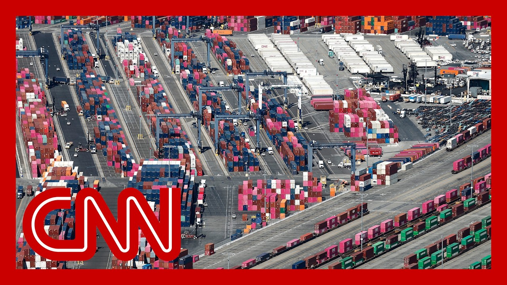

【"依然非常清淡"：特朗普关税政策下洛杉矶港出现放缓】
Summary: There are concerns about how Trump's trade war will impact daily shopping in the coming weeks and months, with the Port of Los Angeles experiencing a significant drop in cargo due to tariffs on Chinese goods.
摘要： 人们担忧特朗普的贸易战将如何影响未来数周乃至数月的日常购物，洛杉矶港因对中国商品加征关税而出现货运量大幅下滑。

⏱️ Estimated Reading Time: 15 min
There are also big questions about how Trump's trade war could affect your everyday shopping here in the coming weeks and months.
特朗普的贸易战将如何影响未来几周和几个月的日常购物，仍存在很大疑问。
The Port of Los Angeles, which is the busiest in the U.S., is seeing significantly less cargo and containers this month after the president dropped his tariffs on products from China.
作为美国最繁忙的港口，洛杉矶港本月在中国商品关税下调后，货运量和集装箱数量显著减少。
It's a major reversal in fortunes for the port and its workers.
这对港口及其工人来说是命运的重大逆转。
For the ten months leading up to the trade fight, the port had seen consistent growth.
在贸易战爆发前的十个月里，该港口的业务一直保持稳定增长。
With us now is the executive director for the Port of Los Angeles, Jeanne Soroka.
现在与我们连线的是洛杉矶港执行董事珍妮·索罗卡。
And Jeanne, it's great to have you back.
珍妮，很高兴再次邀请到你。
We have been checking in with you regularly to see how things have been going.
我们一直定期与你联系，了解最新情况。
Three weeks ago, traffic was down by about a third.
三周前，货运量下降了约三分之一。
How's it going right now?
现在情况如何？
Good afternoon Brianna.
下午好，布里安娜。
And May overall has been a pretty light month, bookended by a very low first week in volume, down more than 30%, as you mentioned.
整个五月是一个非常清淡的月份，正如你提到的，第一周货运量极低，下降了30%以上。
And here we are in the last week of the month, also down about 30% compared to the same time last year.
现在是本月的最后一周，与去年同期相比也下降了约30%。
Some 17 vessel arrivals out of 80 or more that were scheduled this month canceled outright for the month of June.
本月原定80多艘船只到港，其中约17艘直接取消了六月的行程。
We see ten additional cancellations, although half of those are in the first week.
我们还看到另外10艘取消，尽管其中一半是在第一周。
So why we see this reprieve right in tariffs? on China, 145% down to 30% temporarily.
那么为什么在关税暂时从145%降至30%的情况下，我们仍看到这种缓解？
Why is that not mirrored in what you're seeing in the port?
为什么港口的情况没有反映出这一点？
Or do you expect that it will not be exactly mirrored?
或者你预计不会完全一致？
Two reasons, Brianna.
有两个原因，布里安娜。
Number one, 30% added on to the cost of goods is still a very high number.
第一，商品成本增加30%仍然是一个很高的数字。
And second, that 30% is just an average of averages.
第二，这30%只是一个平均值的平均值。
A customer near the port here told me that they import auto parts for the big three manufacturers in Michigan.
港口附近的一位客户告诉我，他们为密歇根州的三大制造商进口汽车零部件。
The average tariff on those parts about 57.5%.
这些零件的平均关税约为57.5%。
Baby shoes in the 90s.
婴儿鞋的关税在90%左右。
Other products? Well above that 30% mark have been the point of conversations of importers and me over the past several weeks.
其他产品？过去几周，进口商和我讨论的重点是远高于30%关税的商品。
So here's what we're seeing.
以下是我们的观察。
One. Goods that were manufactured and on factory floors in containers are being scooped up by American importers to honor those agreements.
第一，美国进口商正在抢购工厂里已装箱的货物以履行协议。
Second, if a purchase order was already in motion to manufacture goods, likely those will be honored as well and brought in.
第二，如果生产订单已启动，这些货物很可能也会被履行并进口。
But with this 90 day reprieve as you and I have discussed, it's not a long runway in our business.
但正如我们讨论过的，90天的缓刑期对我们的业务来说并不长。
Not many new orders have gone in since those talks in Geneva concluded.
日内瓦谈判结束后，新订单并不多。
They're not ordering the new stuff, right.
他们没有订购新商品，对吧。
They're afraid they're not going to beat the buzzer here.
他们担心无法赶在截止日期前完成。
And to be clear, your port, which is why we we like you a lot, Jeanne, but we also really like to talk to you being from the port of Los Angeles, because your port in the neighboring Port of Long Beach, both there in San Pedro Bay, are bellwethers for the U.S. economy.
明确一点，珍妮，我们非常喜欢你，也喜欢与你交谈，因为洛杉矶港和邻近的长滩港位于圣佩德罗湾，是美国经济的风向标。
So, well, Americans, looking at your port, how should they be seeing what is happening there as they consider their own bottom line?
那么，美国人通过观察你们港口的情况，应如何看待这些变化以评估自身利益？
Brianna, that's a great point.
布里安娜，这个问题很好。
And while we are an economic engine feeding cargo to every congressional district in the nation, we're also a leading economic indicator.
虽然我们是向全国每个国会选区输送货物的经济引擎，但也是一个领先的经济指标。
We can see three and four months ahead of time how many orders actually go into factories in Asia, what's produced, how much is coming across the ocean here?
我们可以提前三到四个月看到亚洲工厂接收的订单数量、生产情况以及运往这里的货物量。
And I see it's still very light.
而我看到目前仍然非常清淡。
Parts suppliers to American factories are telling me that they will keep a very low but steady stream of parts to avoid plant shutdowns.
美国工厂的零部件供应商告诉我，他们将维持很低但稳定的零部件供应以避免停产。
An automotive plant line shuts down.
一条汽车生产线停产。
That's 4 million bucks at the top line in lost money to that factory.
这意味着该工厂损失400万美元的收入。
And on the retail side, if the goods aren't moving fast off the shelves, they're not going to be replenished.
在零售端，如果商品销售缓慢，就不会补货。
So lower inventory, higher carrying costs for American companies, fewer selections, and likely higher prices leading into the summertime.
因此，美国企业的库存减少、持有成本上升、选择减少，夏季来临前价格可能上涨。
You also your port workers warehouse workers, truck drivers, there's a local restaurants, local businesses that are all connected to the economy.
还有港口工人、仓库工人、卡车司机、当地餐馆和本地企业，他们都与经济息息相关。
They're in the port.
他们在港口工作。
They're really feeling it.
他们确实感受到了影响。
What does it mean for the local economy, and how quickly can that rebound if things do actually normalize when it comes to port traffic?
这对本地经济意味着什么？如果港口运输恢复正常，经济能多快复苏？
In the second largest city in our nation, Brianna, 1 in 15 working Angelenos has a job related to this port job postings for dockworkers on occasional shifts have been down as much as 40%.
布里安娜，在美国第二大城市，每15个工作的洛杉矶人中就有1人从事与港口相关的工作，码头工人的临时班次招聘下降了40%。
Less cargo means fewer jobs.
货运量减少意味着就业机会减少。
Truckers hauling fewer containers across the Southern California gateway.
卡车司机在南加州门户运输的集装箱数量减少。
And realistically, that's going to hit home if you're getting less hours on the job and you go to the market, the prices are higher.
现实情况是，如果你的工作时间减少，而市场价格上涨，你会受到双重打击。
You get hit twice.
你会受到双重打击。
Jeanne Soroka, thank you so much for being our barometer.
珍妮·索罗卡，非常感谢你成为我们的晴雨表。
Every few weeks as we talk to you.
每隔几周与你交谈。
We really appreciate it.
我们非常感激。
The army of millions and millions of human beings screwing in little, little screws to make iPhones, that kind of thing is going to come to America.
数百万工人拧小螺丝生产iPhone的这类工作将转移到美国。
Okay, so is it really?
真的会这样吗？
This is a question we've been asking over and over again, and this is what we're going to dig into today on this morning's off script conversation, because it's coming as president Trump is putting pressure on Apple CEO Tim Cook to bring iPhone manufacturing to the U.S., warning that if it doesn't happen, the company will face a tariff of at least 25%.
这是我们反复提出的问题，也是今天早间即兴对话要探讨的内容，因为特朗普总统正施压苹果CEO蒂姆·库克将iPhone生产转移到美国，并警告否则将面临至少25%的关税。
They build their plant here.
他们在这里建厂。
There's no tariff.
就没有关税。
So they're going to be building plants here.
所以他们将在这里建厂。
But I had an understanding with him that he wouldn't be doing this.
但我与他达成共识，他不会这样做。
He said he's going to India to build plants.
他说要去印度建厂。
I said, that's okay to go to India, but you're not going to sell into here without tariffs.
我说去印度可以，但想在这里销售就得交关税。
But making the iPhone or any other gadget in the U.S., it's not so easy.
但在美国生产iPhone或其他电子产品并不容易。
According to a new article on CNN this morning.
根据CNN今早的一篇新文章。
Joining us now is CNN business tech writer Lisa at Chico.
现在与我们连线的是CNN商业科技撰稿人丽莎·奇科。
Lisa, thanks for bringing your writing to us.
丽莎，感谢分享你的文章。
Good morning.
早上好。
Good morning.
早上好。
Thanks for having me.
谢谢邀请。
So I feel like there is this Dave Chappelle joke where he talks about how he doesn't want an iPhone to cost $9,000, so he doesn't care that it's not made in the US. but at this point, because people have started looking into it, do we know why it's so hard to make this technology here?
我觉得这有点像戴夫·查普尔的笑话，他说不想让iPhone卖9000美元，所以不在乎是否在美国生产。但现在人们开始研究，我们是否知道为什么在美国生产这类技术如此困难？
Yeah, absolutely.
是的，当然。
So it comes down to a few things.
这归结为几个因素。
But the biggest factor here is that we just don't have the workforce with the right skills in the US to build iPhones and other similar products at scale.
但最大的问题是我们美国缺乏具备相应技能的劳动力来大规模生产iPhone等类似产品。
Now, this is not the first time this has come up.
这不是第一次出现这个问题。
Apple CEO Tim Cook has talked about this in the past, about how the skills that the workforce in China and India, the skills over there are a bit different than the manufacturing skills here.
苹果CEO蒂姆·库克过去曾谈到，中国和印度劳动力的技能与美国制造业技能有所不同。
And speaking at a fortune magazine conference in 2017, he kind of described it as this intersection of computer science, advanced robotics and craftsmanship.
在2017年《财富》杂志会议上，他将其描述为计算机科学、先进机器人和工艺技术的结合。
So in order to bring iPhone manufacturing to the United States, Apple would either have to build up that workforce or try to automate things more in the production process, which would probably be the more likely option.
因此，要将iPhone生产转移到美国，苹果要么培养这样的劳动力，要么在生产过程中提高自动化程度，后者可能更可行。
one of the things Jonathan just said on the panel here is like, why would any company kind of, change everything for a president who might be in office for just another three years? Can you talk about that calculus for any of these tech firms?
乔纳森刚才在讨论中提到，为什么公司要为一位可能只剩三年任期的总统改变一切？你能谈谈科技公司的这种考量吗？
Absolutely.
当然。
It's a really tough position that Apple is in for that exact reason.
正是这个原因让苹果处于非常艰难的境地。
The Trump administration has been pushing Apple to bring its iPhone manufacturing to the US.
特朗普政府一直推动苹果将iPhone生产转移到美国。
But to do that, it would have to upend its entire production system.
但这样做将颠覆其整个生产体系。
And Apple is really good at this.
苹果在这方面非常擅长。
It spent decades really building out its supply chain and its network of suppliers and its manufacturing processes.
它花费数十年建立供应链、供应商网络和制造流程。
So to upend that and bring that to the United States for what might not have to be a long term bet, would not be would likely not be the right move for Apple and possibly not the right move for consumers either, because it could potentially lead to price hikes.
因此，为可能并非长期的政策颠覆体系并转移到美国，对苹果可能不是正确的选择，对消费者也可能不利，因为这可能导致价格上涨。
I want to talk about something, though, because back in 2018, during Trump's first term, he actually took credit for bringing Foxconn, and their factory to Wisconsin.
我想谈谈另一件事，因为在2018年特朗普第一任期内，他曾将富士康工厂落户威斯康星州归功于自己。
They're a Taiwanese electronics manufacturer.
这是一家台湾电子制造商。
And here's how he talked about it back then.
这是他当时的说法。
Moments ago, we broke ground on a plant that will provide jobs for much more than 13,000 Wisconsin workers.
不久前，我们破土动工一座工厂，将为威斯康星州提供远超13000个工作岗位。
America is open for business, more than it has ever been open for business.
美国对商业开放，比以往任何时候都更开放。
Between our low taxes, our cutting of regulations, and we're not finished with the regulation.
凭借低税率和减少监管，而且我们尚未完成监管改革。
And we'll have regulation, but it's sensible regulation.
我们会有监管，但是合理的监管。
You'll be able to get things approved quickly.
你们将能快速获得批准。
So a lot of this rhetoric is the same.
很多这样的说辞是相同的。
But we you were digging in to like what actually happened.
但我们深入调查实际发生的情况。
And I think they were supposed to employ 13,000 people as of December of last year, they had employed just over 1000 people.
我记得截至去年12月，他们本应雇佣13000人，但实际只雇佣了1000多人。
is this a Foxconn problem, or is this a sign of like, how this kind of plays out?
这是富士康的问题，还是这类事件的典型表现？
I think it kind of speaks to the broader issue here, is that the United States just doesn't have the workforce with those skills at scale.
我认为这反映了更广泛的问题，即美国缺乏具备这些技能的大规模劳动力。
And building that takes a lot more than just opening up a new facility or a new factory.
培养这样的劳动力远不只是开设新设施或新工厂。
There's very specific specialized training that has to be involved.
需要非常专业化的培训。
So I think it speaks to that larger issue and also the fact that manufacturing jobs in the United States just aren't as big as they used to be.
因此，我认为这反映了更大的问题，也说明美国制造业岗位已不如从前重要。
There's lots of other types of jobs that are more in demand.
其他类型的岗位需求更大。
So I think that what happened with Foxconn kind of speaks to this broader issue, that just because you build it doesn't necessarily mean that they will come.
所以富士康的情况反映了这个更广泛的问题：建厂并不一定意味着工人会来。